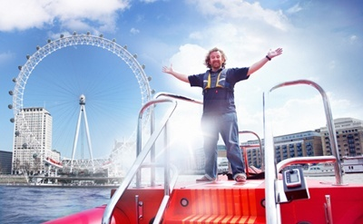
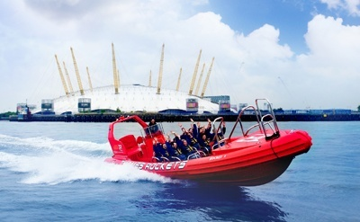
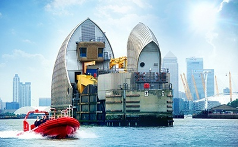
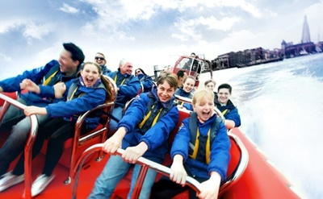
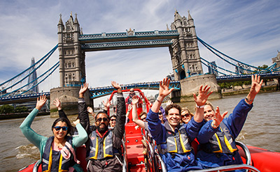

The London Eye → Canary Wharf → The London Eye
The Ultimate London Adventure
This is the one that started it all!
Our ‘Ultimate London Adventure’ is a jam-packed, fun-filled adrenaline-fuelled 50 minutes.
50’
min. ride
22
sitepoints
35
mph

The London Eye → Thames Barrier → The London Eye
Thames Barrier Explorers Voyage
Your journey will take in every major sight the Thames has to offer from the power of Parliament to the might of the Thames Barrier and back.
80’
min. ride
28
sitepoints
35
mph

TSt Katharine’s Pier → Thames Barrier → St Katharine’s Pier
Break The Barrier (Speed only)
It’s Fast, Furious and a World First. Thames Rockets is a new thrilling, high-speed boat ride blasting off this summer in the Capital.
40’
min. ride
8
sitepoints
35
mph

The London Eye → Canary Wharf → The London Eye
Captain Kidd's Canary Wharf
Specially designed for families
You can still expect all the thrills and spills that have become the trademark our experience!
50’
min. ride
22
sitepoints
35
mph

The London Eye → Canary Wharf
Spring
Spring
has Sprung
For us that only means one thing. Sunshine, spring chickens, and the start of another Super Speedy Summer!
50
min. ride
22
sitepoints
35
mph